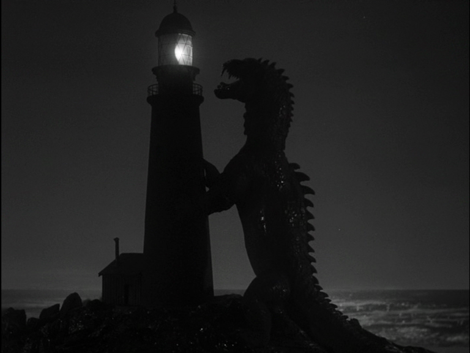

Tuesday, January the 24th, 2012
back to: title, date or indexes
Perhaps this lighthouse is on the tip of Porridge Island! That sea monster has probably had a sniff of the greasy doings…

Exciting sea-monster-attacks-lighthouse film still from Chilling Scenes Of Dreadful Villainy